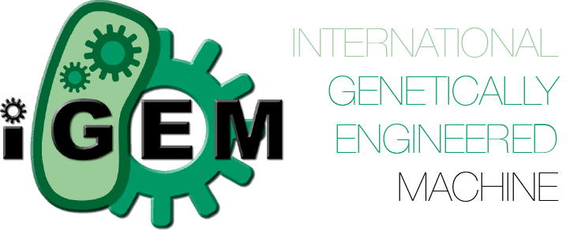

About Me
I'm currently working as a Software Developer intern at IBM Master Data Management where for the most of time, I am dealing with Continuous Integration pipeline and managing our team's BVT and the website that I developed for managing its result on UI.
I am currently pursuing a Bachelor of Science Degree in Computer Science at the Univeristy of Toronto with a major in Statistics. I will be returning to UofT in January 2018 to continue my 3rd year of the undergraduate.
I love computer science and all of its related topics. My main interests are in AI, Web Development, DevOps, and Machine learning. Some of my hobbies during my leisure time include watching a drama, soccer, and reading sci-fi novels.
Work Experiences
I have worked in various workplaces and research since Secondary School and here are the list of it. For more detail, please check out my LinkedIn or Resume.
- IBM – Master Data Management Software Developer Intern
- UofT iGEM – Summer Dry Lab Software Developer & Researcher
- UofT Computer Science Dept. – CS Ambassador & Event Assistant
- Toronto 2015 PanAm & ParaPanAm Games – Cast Assistant & Web Developer
- John's Juke Engineering Supplier – Hardware Repair Assistant
- Freek Geek Vancouver – Technician Intern
- Computers for School – Software Lab Student Intern
MDM Software Developer, IBM Canada Ltd.
Sept 2016 - Present

- Developed and managed the BVT results through Continuous Integration Pipeline User Interface. Used PHP7, HTML, Java, JavaScript(JQuery, JSON), DataTables, CSS to implement a basic. Also used Ubuntu server to host this with DB2 to handle, store, and update an incoming data.
- Improved CI pipeline for MDM delivery team through Jenkins and Cronjob on all platforms (AIX, RHEL, Ubuntu) using Java, and Perl Script.
- Made an improvement of MDMInstallAssistant Tooling which uses pom.xml and response file through Installation Manager in a console mode.
- Implemented a slack App through shell scripting with slack-Web hook integrations API (with a bit of JSON) to notify the BVT result whenever the new build's installation and testing complete
- Improved a sshd connection and communication between Cygwins (Windows VM) and AIX/Linux(RHEL, Ubuntu) machines.
- Troubleshooted any installation failures relating to MDM product and resolved the problem.
- Troubleshoot any DB related issues (mostly on ORACLE database)
Summer Software Developer & Researcher, University of Toronto
May 2015 - Oct 2015
- Developed and managed the website of UofT iGEM 2015 for the showcase (mostly used Javascript(AngularJS), HTML, CSS).
- Researched about impacts of oil sand pond in Alberta and its surrounding biome as a background research.
- Developed the Framework of the ConsortiaFlux Interface using BioJava, D3.js and Javascript interacting with Node and Edges.
- Received the 2nd place at the iGEM 2015 Competition that was held in Boston, US for the recongition of our project and proposals.
For more details about the iGEM competition, please visit http://igem.org/Main_Page
Cast Assistant & Web Developer, Toronto 2015 PanAm Games
April 2015 - Aug 2015
- As a cast assistant, assited opening and closing ceremonies for both Pan Am and Para Pan Am games 2015.
- Managed and developed the webpage for Toronto 2015 Pan Am Games Volunteer Portal using HTML, JavaScript(mostly JSON and Jquery) and CSS (bootstrap) – https://volunteer.toronto2015.org/Portal/index.cfm/volunteer/login. However as of Dec 2015, the host webpage was disabled and removed. The portal was used to inform other volunteers about meet up places for cermony practices and their assigned location for helping out events throughout events in Summer 2015.
Projects
All of my project can be view on https://github.com/justinsong01
AngularJS
- Angular UI Developments –Working on UI using Angular JS to support multi clients form submission through MYSQL (In progress)
- AngularJS Minesweeper– My first Angular JS app game embedded with HTML
Unity & C# Projects
- Unity Card Mat Drop & Drag – Gameboard mat that can drag and drop the cards, used C# and Unity 3d framework
- Unity Score Ball Game– My first Unity project with C# and Unity 3D platform that has the ball track the number of coin it picked up.
Google App Script Project with Youtube
- Youtube Auto Subscription Adder – using Google SpreadSheet App API, Google App Script (.gs file), and Java embedded with HTML that adds a youtube playlist.
Maven Plugins
- Maven Plugin for Java Spring Framework – developed using java, Maven Concepts, pom.xml and .iml concept
Microsoft Hackathon 2016
- MS Slack System Notifier – Developed a slack Application which communicates with Microsoft Azure microservices API to inform the changes made throughout the system.
Personal Website (Old)
- Old Github Website – My first website building using CSS, JavaScript, Bootstrap and HTML